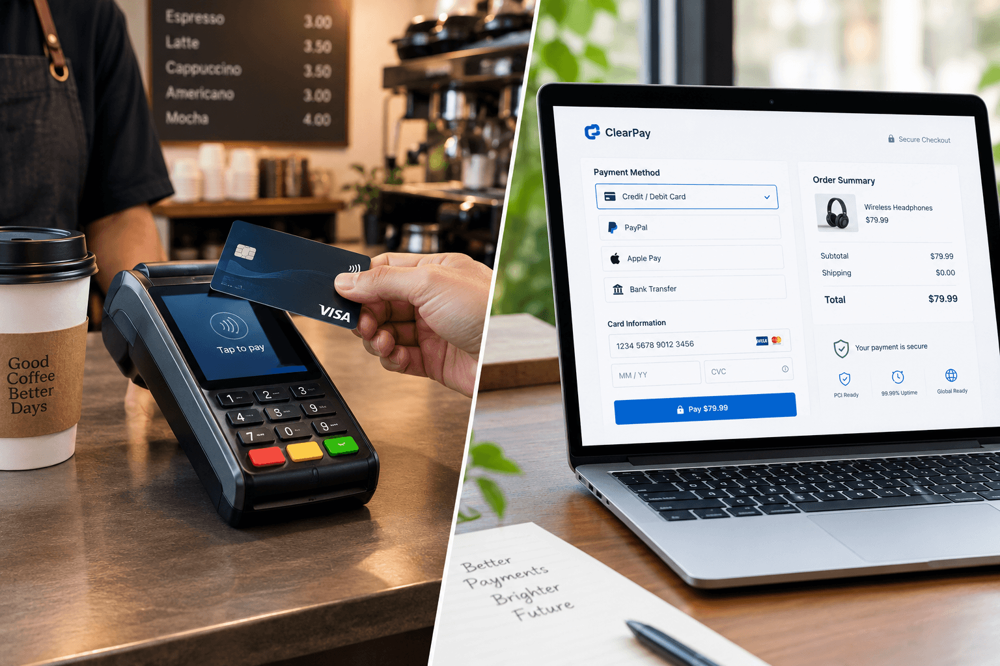
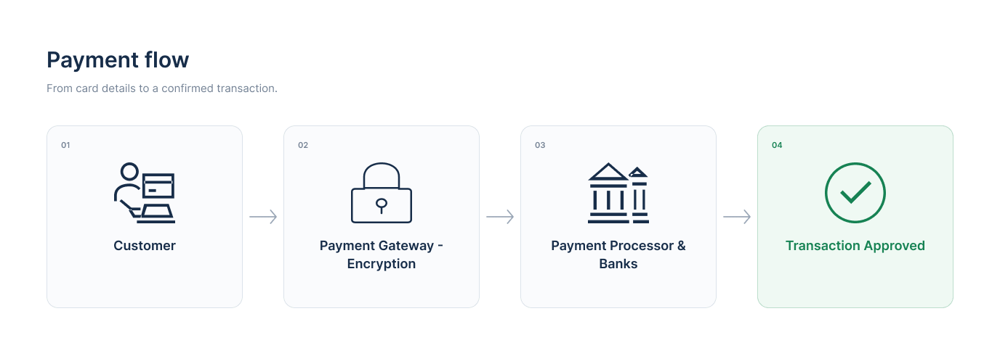
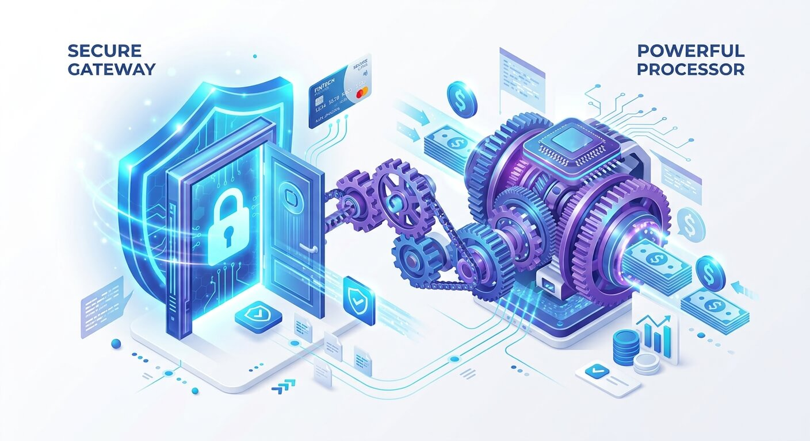

What Is a Payment Gateway? Explained Simply
Imagine visiting a physical store and paying with your debit or credit card. The payment terminal securely sends the transaction information through the payment system so the relevant financial institutions can authorize it.
A payment gateway performs a similar role for online purchases. It helps securely collect and transmit payment information between a customer's checkout and the payment services that handle authorization.

Depending on how a website integrates its payment service, customers may enter their details on a hosted payment page or through an embedded checkout. The gateway's role and the exact data flow can vary by provider and integration.
In simple terms, a payment gateway helps an online business accept payments without having to build the entire payment infrastructure itself.
What Happens When a Customer Makes a Payment?
When a customer clicks "Pay Now," several systems may communicate behind the scenes. A typical card payment follows a process like this:

- Payment details are submitted. The customer enters their card details on a checkout page or uses a supported payment method.
- Information is transmitted securely. The checkout and payment services use appropriate security measures, commonly including HTTPS and TLS, to protect information in transit.
- The payment request is routed. The gateway or integrated payment platform passes the transaction request to the relevant processor or acquiring payment service.
- The transaction is authorized. The request is routed through the payment network to the customer's card issuer or relevant financial institution for a decision.
- A response is returned. The authorization result travels back through the payment system, and the website displays an appropriate status to the customer.
- Settlement follows. If approved, the transaction may proceed through clearing and settlement. The time it takes for funds to reach a business account depends on the provider, payment method, and other conditions.
One important detail: authorization does not always mean the money has already reached the merchant's bank account. Settlement is a separate part of the payment process.
Payment Gateway vs. Payment Processor: What's the Difference?
These terms are closely related, and some payment providers offer both services together. However, they describe different functions in a payment setup.

| Payment Gateway | Payment Processor |
|---|---|
| Helps collect and securely transmit payment information from checkout. | Handles transaction communication and processing between relevant payment participants. |
| Connects the checkout experience with payment services. | Helps route transaction information through the payment infrastructure. |
| Often works behind an online checkout. | Often operates behind the scenes as part of transaction processing. |
The key takeaway: A gateway helps connect checkout to payment processing, while processing services handle transaction communication. In practice, one provider may combine these functions, so the distinction depends on the payment setup.
What Should a Business Consider Before Choosing a Gateway?
Choosing a payment solution involves more than comparing prices. Here are some useful factors to evaluate before making a decision.
1. Transaction Fees
Providers may charge a percentage, a fixed fee per transaction, monthly fees, or other charges. Review the full pricing structure and calculate how it could affect your business margins.
2. Supported Payment Methods
Consider whether your customers need card payments, digital wallets, bank transfers, or locally popular payment methods. Availability depends on the provider and the countries it supports.
3. Security and Compliance
Review the provider's security documentation, data protection practices, and relevant PCI DSS responsibilities. Compliance requirements depend on the payment setup; using a provider does not automatically remove every security obligation from a business.
4. Integration and Developer Support
Check whether the provider offers clear documentation, suitable APIs, test credentials, and a sandbox environment. A well-documented integration can make development and testing easier.
5. Settlement and Support
Find out when funds are normally settled, how refunds and disputes are handled, and what customer support is available. Settlement times vary, so check the provider's published terms instead of assuming a universal timeframe.
Frequently Asked Questions
Is it safe to enter card details online?
Online payments can be secure when the merchant and its payment providers use appropriate safeguards. Look for a legitimate website and secure connection, but remember that HTTPS alone does not prove a business is trustworthy or guarantee that every part of a payment system is safe.
Is UPI a payment gateway?
No. UPI is a payment system used to transfer money. A gateway is a technology layer that can help a website or application initiate and manage a payment through supported payment services.
Does a payment gateway hold my money?
A gateway generally facilitates payment information exchange rather than acting as the customer's bank. The handling and settlement of funds depend on the payment provider, acquiring arrangement, and applicable terms.
Does an approved payment mean the money has settled?
Not necessarily. Authorization indicates that a payment has received an approval response. Clearing and settlement happen separately, and the timing depends on the payment method and provider.
Explore the ClearPay Demo
ClearPay is a fictional fintech demonstration project exploring payment workflow concepts and business-focused interface design.
Explore Demo Features